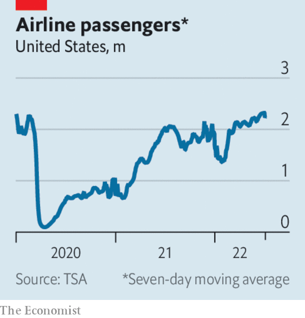

More Americans took flights over the July 4th weekend than at any time since the start of the pandemic. The Transportation Security Administration screened almost 2.5m passengers on July 1st alone, the most since February 11th 2020. But the rebound in travel has left airlines and airports, which cut staff during the pandemic, struggling to cope. Hundreds of flights were cancelled over the weekend, and thousands more delayed. Estimates of the number of people travelling to America in the coming months have risen, now that it has lifted requirements on testing for covid-19.